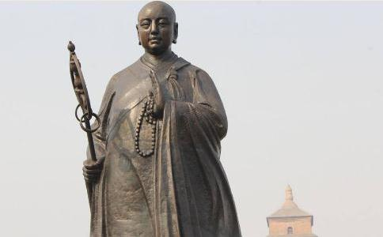

历史常常和人开玩笑。有时，变戏法一样，变幻出来的景象使人眼花缭乱，难以琢磨。《
洛阳偃师县陈河村，从唐玄奘少小贫困
唐玄奘13岁出家，少年早慧，听法师讲经，很快领悟，并能升座复述。后来随其早已出家的哥哥游学各地，遍谒名师。到26岁之时，他游遍了唐帝国大部分地区，几乎穷尽了佛家各派学说。但是，越参学越觉得不解的问题越多，并且，有些问题各大师之间分岐甚大。如“众生皆有
贞观二年（公元628年），27岁的唐玄奘约了几位僧人，共同申请出国西游。因前一年玄武门之变，唐太宗杀了哥哥建成及弟弟元吉。国内外情势都不太安定。西以玉门关为界，禁止关内人与关外人交往。所以，玄奘的申请未被批准。几位好友已决定不去，但玄奘仍不甘心，单独一人上表申请，仍然又被驳了回来。接连两次驳回申请，非但没挫伤他的意志，反而西游的愿望更加强烈了，决计不顾一切后果，偷渡出关。贞观三年（公元629年），长安一带闹饥荒，朝廷准许饥民自由外出觅食。唐玄奘看准这个时机，毫不犹豫地混入灾民之中，闯出关去。
出关之后，一路上黄沙漠漠，空旷苍凉，上无飞乌，下无走兽，更无水草。玄奘只能望着尸骨马粪的遗迹前进。在经过八百里大沙漠时，玄奘曾4日5夜滴水未进，几次临近死亡。后来奇迹般的遇水得救，才到了一个
进入印度之后，玄奘边参学，边广礼圣迹，辗转数十国，直到贞观7 年，才到达当时印度佛教最高学府那烂陀寺。那烂陀寺是当时全印度最大的寺院。是释迦牟尼在世时，由500商人共同出资十几亿金钱买下的一座著名的园林，供奉给佛作为
那烂陀寺对住进的僧人要求极为严格，当时在
如此优厚的
当时印度的思想界非常活致，各教派之间相互论战，相互攻击，斗争十分激烈。在曲女城举行的一次全印度大法会上，在五印度18个国王，大小乘
玄奘的佛学功底此时实际上已超过他的老师戒贤大师，成为全印度的最高峰。他西行求法的目标已经达到，他感到中土僧俗都在召唤他，应该赶快回国了。他谢绝戒日王及五印大德法师们的一再挽留，于贞观19年（会元6朽年）满载着名震五印的声誉，携带着大批经卷，回到了长安。
玄奘回国以后所从事的一切佛教活动始终得到唐王朝的大力支持，特别是唐太宗对玄奘学问才华和气质风度都很赏识，并认为他很有政治潜能，因此，曾两次劝说玄奘
玄奘最初西行求法的目的，是排除万难，寻求释迦佛之本意，统一
法相唯识宗是直接继承印度瑜伽派的理论、并且是完全严守其经典教义的一个宗派。这个宗派坚持把众人分成五个等级，把一部分众生视为天生低贱，排除在成佛的可能性之外。这与当时在中土流行的“众生皆有佛性”，人人都可以成佛的说法不相符合。尽管有帝王的直接支特，又由名声显赫的唐玄奘创立，并且也确实曾盛极一时，但是，这新的幼苗还是很快就枯萎了。
六祖惠能根本无意和玄奘作对，然而，他却是玄奘的另一个对立的极端，虽是无文化的“粗人”，却顺应了中土大地上的民心，创立了“直指人心，见性成佛“的
在教义上，不仅“人人皆有佛性”，而且，就是罪行累不，杀人如麻的强盗，只要“放下屠刀”，也便可“立地成佛”。可以说，在
历史上的大多数变革都需要 “唤起民众”，都需要得到下层百姓的理解和支特，从这个意义上说，具有高深文化修养的唐玄奘创立佛教门派的失败，以及“大老粗”惠能创立禅宗的兴盛，就具有深远的历史原因和普遍社会意义了。